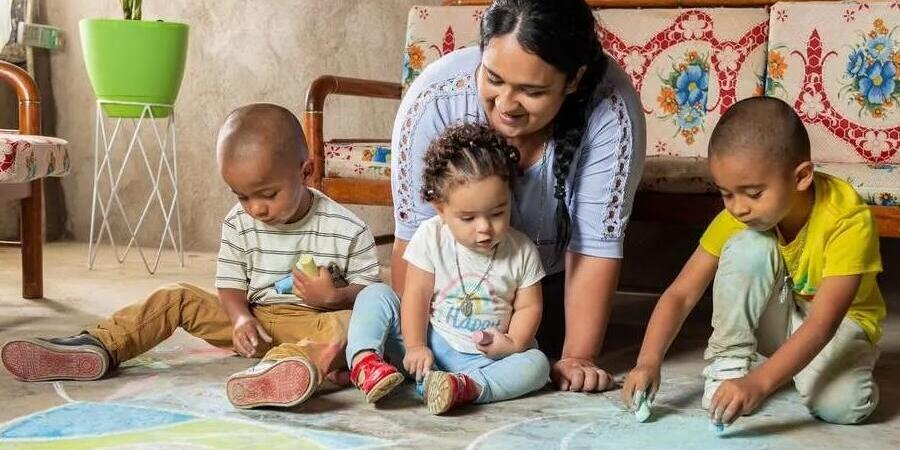

Centro de Valor Público
El Centro de Valor Público es el centro de investigación aplicada en política pública de la Universidad EAFIT. Diseña y evalúa programas públicos con gobiernos, organismos internacionales y empresas. Su trabajo se organiza en cinco iniciativas: seguridad y justicia, gobierno y democracia, desarrollo económico, equidad y desarrollo social, e innovación social. Dirijo el Centro desde 2025. Sus publicaciones, notas de política y equipo están en la página del Centro en EAFIT.

Parceros Creadores
Aliado: Secretaría de Juventud de Medellín
Cada año, miles de jóvenes en Medellín dejan el colegio sin conseguir trabajo estable. Algunos de ellos corren un riesgo alto de reclutamiento por grupos criminales. Parceros Creadores usa una encuesta de tamizaje para encontrar a los jóvenes que no estudian, no trabajan y están en riesgo. Quienes cumplen esos criterios reciben acompañamiento psicológico y vocacional.
La Secretaría opera el programa como una secuencia de experimentos. Cada cohorte responde una pregunta de diseño, cuya respuesta orienta el programa del año siguiente. En 2024 asignamos al azar a cerca de 1.500 jóvenes a terapia cognitivo-conductual (TCC), en sesiones grupales o individuales, o a un programa de coaching experiencial, una comparación en la que la TCC produjo las mayores reducciones en depresión y ansiedad y los mayores aumentos en el interés por trabajar y estudiar. El experimento de 2025, con 4.000 jóvenes (la mitad tratados), comparó la TCC grupal con la individual y varió el número de sesiones para encontrar la dosis con el mayor efecto por peso invertido, que resultó ser de trece sesiones individuales. En 2026 el programa atendió a cerca de 1.400 jóvenes con ese protocolo e incorporó un componente de reducción de daños sobre el consumo de drogas.
Sistema del Cuidado de Antioquia
Aliado: Gobernación de Antioquia
En Antioquia, las mujeres dedican hasta 14 horas al día al trabajo de cuidado no remunerado. En el 65 % de los hogares lo asumen solas. Esas horas no pueden ir al trabajo remunerado, lo que mantiene baja su participación laboral y su ingreso. El sistema de cuidado de la Gobernación trabaja en cuatro frentes: centros de cuidado y espacios comunitarios, formación de cuidadoras y cuidadores, programas culturales (incluido trabajo con hombres sobre la corresponsabilidad en el cuidado) y coordinación entre entidades del gobierno. Si funciona como está diseñado, las horas que libera deberían verse primero en más mujeres con empleo remunerado y, más adelante, en un reparto más equilibrado del cuidado dentro de los hogares.

Fortalecimiento municipal a lo largo del oleoducto OCENSA
Aliado: OCENSA (Oleoducto Central S.A.)
Cuarenta y nueve municipios están sobre la ruta del oleoducto central de Colombia. La mayoría tiene equipos técnicos pequeños. Les cuesta formular proyectos que califiquen a financiación nacional o planear el uso de su territorio. El Centro capacitó a funcionarios municipales en formulación de proyectos para mecanismos de financiación pública, planeación territorial y gestión fiscal. El proyecto también creó rutinas de planeación participativa y rendición de cuentas, que dan a la empresa y a los municipios un canal regular de diálogo.

Hogares Saludables
Aliado: Cementos Argos
Hogares Saludables, de Cementos Argos, mejora pisos, baños y cocinas en viviendas de bajos ingresos. Las familias participan en cada etapa, incluida la construcción. El programa ha mejorado más de 10.000 viviendas y ha llegado a 25.000 personas en Colombia. Tiene réplicas en República Dominicana, Puerto Rico, Honduras y Panamá. Las familias participantes reportan que sus hijos se enferman menos, que los adultos duermen mejor y que ahora invitan gente a casas que antes evitaban mostrar.
Trabaje con nosotros
El Centro desarrolla proyectos de investigación, diseño de políticas y evaluación con gobiernos, organismos multilaterales, ONG y empresas privadas. Para consultas, escriba a stobonz@eafit.edu.co o visite el Centro en EAFIT.